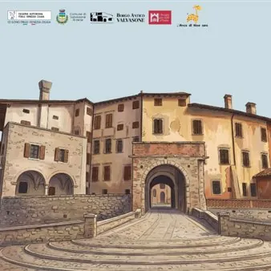

dom 25 ott · dalle 10:30
Un Castello da Favola
Ascolta una storia, scopri i segreti del castello, dai spazio alla tua creatività. Pronti a scatenare la fantasia tra le mura di un antico castello? Il Castello di Valvasone si trasforma in un regno di storie e creatività, dove i bambini potranno immergersi nel magico mondo…
 Indicazioni
Indicazioni
- Costi e prenotazioni
- Costo non indicato · Prenotazione non indicata
- Programma
- Programma da verificare. Apri la fonte ufficiale per orari e possibili aggiornamenti.
- In caso di maltempo
- Nessuna indicazione specifica pubblicata.
- Note
- Acquisito automaticamente dalla fonte.
L’EVENTO
Descrizione completa
Ascolta una storia, scopri i segreti del castello, dai spazio alla tua creatività.
Pronti a scatenare la fantasia tra le mura di un antico castello?
Il Castello di Valvasone si trasforma in un regno di storie e creatività, dove i bambini potranno immergersi nel magico mondo delle favole e dare vita alla loro immaginazione!
Oggi, nel bellissimo teatrino settecentesco assisterete allo spettacolo IL GIARDINO DI MATISSE
con Giorgio Rizzi
regia Fabio Scaramucci
dal libro illustrato di Samantha Friedman e Cristina Amodeo
Una storia raccontata con un grande kamishibai, oggetti, figure e musica
Un giorno l’artista Henri Matisse ritagliò un uccellino da un pezzo di carta bianca.
Aveva una forma semplice, ma gli piaceva così tanto che…
Così comincia la nostra storia…
Un’avventura tra colori, fogli di carta, un grande kamishibai e molta fantasia.
Un’esperienza indimenticabile con Ortoteatro per tutta la famiglia:
Massimo 25 partecipanti tra adulti e bambini ad ogni turno. L’attività è pensata per bambini da 5 anni in su.
Costo: biglietto intero € 6; ridotto over 65 e studenti € 5; under 14 accompagnati ingresso gratuito.
I bambini devono essere accompagnati da almeno un adulto.
Info e prenotazioni: Ortoteatro 320 05 300 07 anche WhatsApp
organizzazione.ortoteatro@gmail.com
www.ortoteatro.it
IL PROGRAMMA
Programma e orari
Appuntamenti raccolti dalle fonti elencate. Dove manca un orario, non è ancora disponibile in questa scheda.
Programma pubblicato
- Dal 2026-10-25 al 2026-10-25
INFORMAZIONI UTILI
Prima di partire
- Controllare la fonte prima di partire.
ORGANIZZAZIONE